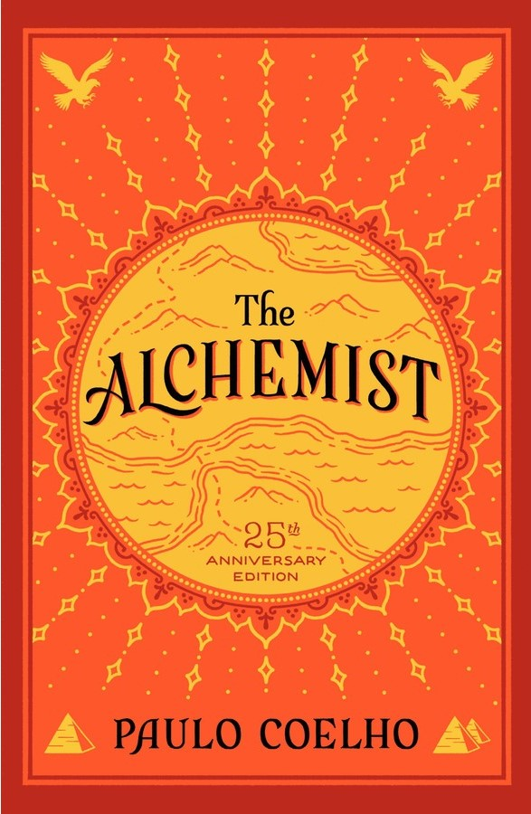

The Alchemist

Tittle:
The Alchemist
Author:
Paulo Cohelo
Publication year:
1988
Genre:
Spirituality
Synopsis:
The story revolves around Santiago, an Andalusian
shepherd with a recurring dream. In this dream, a child tells
him to seek treasure at the foot of the Egyptian pyramids
Reviews
“The Alchemist” is a timeless masterpiece that resonates with readers across generations,
inviting them to embark on a transformative odyssey of self-discovery.
By Scott David
I feel like everyone LOVES this book, but I was kind of underwhelmed. I know that translation affects the quality of writing,
but I could not get into this writing style. At all. I felt like it was totally affected and contrived. He was going for this
"fable/parable" style, but it seemed to fail miserably. The parable-like quality was totally
contrived, and I thought the "moral" was pretty stupid.
By Lucy Brown
Paulo Coelho's masterpiece tells the mystical story of Santiago, an Andalusian shepherd boy who yearns
to travel in search of a worldly treasure.
By John Smith
At its core, "The Alchemist" is a story about the transformative power of following one's dreams and
listening to the whispers of the heart. Santiago's quest serves as a poignant reminder that the pursuit of
happiness is not merely about achieving external success, but about embracing the journey itself
and discovering the hidden treasures that lie within.
By Sara White
One of the most compelling aspects of "The Alchemist" is its timeless wisdom and philosophical insights.
Coelho invites readers to contemplate the universal truths embedded within the narrative, encouraging
introspection and self-discovery. The novel's simple yet profound lessons resonate
with readers of all ages and backgrounds, making it a beloved classic that continues to inspire and uplift.
by Lucy Smith